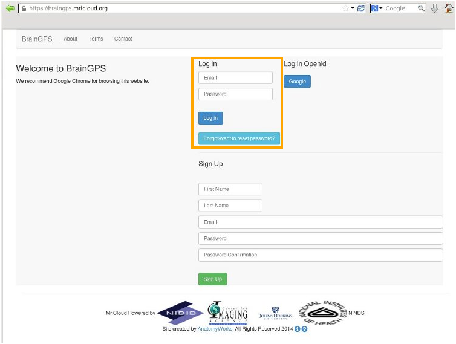

| Step 1 Access the URL https://mricloud.org The web page provides two push buttons. Select the BrainGPS pus button (highlighted) |
|
| Step 2 The BrainGPS login page is displayed. |
|
| Step 3 First time users can sign up for an MRICloud account by providing first and last names, an email address and password. Pressing the Sign Up button will initiate the account request. The user will receive an email confirming creation of an account. |
|
| Step 4 Returning users can log in using an MRICloud account using the controls highlighted at right A push button is provided for the user who wishes to be reminded of user ID or to change password. |
 |